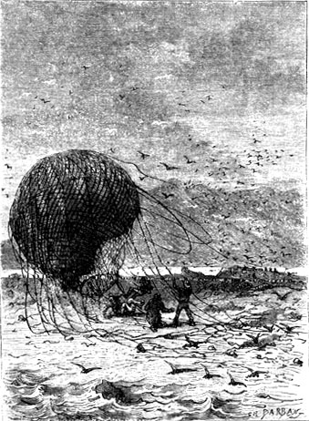

“Are we rising?”
“No! On the contrary! We are descending!”
“Worse than that, Mister Cyrus! We are falling!”
“For heaven’s sake, throw out the ballast!”
“There. The last sack is overboard!”
“Does the balloon rise?”
“No!”
“I hear the clacking of waves!”
“The sea is under the basket!”
“It cannot be five hundred feet from us!”
Then a powerful voice rent the air and these words resounded:
“Overboard with everything heavy!... Everything! We are in God’s hands!”
Such were the words which erupted in the sky above the vast watery desert of the Pacific about four o’clock in the evening of the 23rd of March 1865.
Without doubt no one can forget the terrible northeast storm that burst forth during the equinox of that year when the barometer fell to seven hundred ten millimeters. It was a storm that lasted from the 18th to the 26th of March without letup. It ravaged America, Europe and Asia over a broad zone of eighteen hundred miles around a line oblique to the equator, from the thirty fifth north parallel to the fortieth south parallel. Towns overthrown, forests uprooted, shores devastated by the mountains of water which fell upon them as tidal waves, record bureaus counting hundreds of vessels thrown on the coast, entire territories leveled by the waterspouts which pulverized everything in their path, several thousand people crushed on land or swallowed by the sea, these were the marks of fury left behind by this formidable storm. It surpassed the disasters which so frightfully ravaged Havana and Guadalupe, one on the 25th of October 1810, the other on the 26th of July 1825.
At the very moment when so many catastrophes were taking place on land and on sea a drama no less startling was being enacted in the agitated skies.
In fact a balloon, carried like a ball at the top of a waterspout and caught by the gyratory motion of a column of air, was traveling through space with a velocity of ninety miles per hour 1 turning around itself as if it had been seized by an aerial whirlpool.
A basket oscillated beneath the lower appendage of the balloon. It contained five passengers, barely visible in this thick fog mixed with pulverized water which extended down to the ocean’s surface.
From whence came this balloon, this veritable plaything of the frightful tempest? From which point on the earth’s surface did it take off? Evidently it could not have left during the storm. But the storm had already lasted for five days and its first symptoms were manifested on the 18th. Wouldn’t one be justified in believing that this balloon came from quite a distance, because it had not traversed less than two thousand miles in twenty four hours?
In any case the passengers had no means of guessing at the route traversed since the departure because all points of reference were lacking. This curious fact also resulted, that carried about in the midst of the storm’s violence, they did not suffer from it. They were displaced and turned round and round without sensing any of this rotation nor their horizontal movement. Their eyes could not pierce the thick fog that had gathered under the basket. Around them everything was obscure. Such was the opacity of the clouds that they could not say if it was day or night. No reflection of light, no noise from the inhabited world, no bellowing of the ocean could reach them through this immense obscurity, as long as they remained at the higher altitudes. Their rapid descent alone alerted them to the dangers that they faced above the waves.
However, relieved of heavy objects such as munitions, arms and provisions, the balloon rose to a height of four thousand five hundred feet. The passengers, after having realized that the sea was under the basket, and finding the dangers from above less formidable than those from below, did not hesitate to throw overboard even the most useful objects as they sought to lose no more of this fluid, this soul of their apparatus, which sustained them above the abyss.
The night passed in the midst of anxieties that would have been mortal for less energetic souls. Then day reappeared and with the day the storm showed a tendency to moderate. From the beginning of this day of the 24th of March it showed some symptoms of abatement. At dawn the clouds, now more vesicular, rose higher in the sky. In several hours the waterspout widened and broke up. The wind, no longer a hurricane, changed to “very brisk,” that is to say that the translational velocity of the atmospheric layers was reduced by half. It was still what sailors call “a breeze for three reefs,” but the improvement in the disturbance of the elements was none the less considerable.
About eleven o’clock the lower atmosphere became noticeably clearer. It threw off this dampness that is seen and even felt after the passage of large meteors. It did not seem that the storm had gone further west. It appeared to be dying of its own accord. Perhaps it was dispersing into electrical layers as sometimes happens to the typhoons of the Indian Ocean after the rupture of a waterspout.
But about this time it was again obvious that the balloon was slowly but continually falling to a lower altitude. It even seemed that it was deflating little by little and that its envelope was elongating and distending, passing from a spherical shape to the ovoid.
About noon the balloon did not hover more than two thousand feet above the sea. It contained fifty thousand cubic feet 2 and thanks to its capacity it had evidently been able to maintain itself a long while in the air regardless of whether it attained a high altitude or whether it was moving in a horizontal direction.
At this time the passengers threw out the last objects which still weighed down the basket, several provisions they had kept, everything, even the small knick-knacks in their pockets. Helping each other, they hoisted themselves onto the ring to which the ropes were attached, all the while looking for solid ground beneath the balloon.
It was evident that the passengers could not keep the balloon at a high altitude and that their gas was failing them.
They would perish!
In fact there was no continent, not even an island, beneath them. There was no single spot on which to land, no solid surface which their anchor could touch.
It was an immense ocean whose waves still hurled about with incomparable violence. It was an ocean without visible limits even though they could see over a radius of forty miles from their altitude. It was a liquid plain, battered without mercy and lashed by the storm. It seemed like an overlap of dishevelled waves on which had been thrown a vast network of white crests. No land in sight, not even a vessel.
It was necessary, at any price, to stop the balloon’s descent and to impede it from being engulfed by the waves, and it was evidently this urgent need which occupied the passengers of the basket. But in spite of their exertions, the balloon kept falling, sometimes even at a good speed, all the while following the direction of the wind, that is to say from the northeast to the southwest.
It was a terrible situation for these unfortunates. They were evidently no longer masters of the balloon. Their efforts had no effect. The envelope of the balloon elongated itself more and more. The fluid escaped and they could do nothing to hold it in. Their descent was visibly accelerating and at one o’clock in the afternoon the basket was suspended not more than six hundred feet above the ocean.
In fact it was impossible to prevent the loss of gas which was freely escaping through a rip in the apparatus.
By throwing away everything in the basket the passengers were able to keep it in the air for several more hours. But the inevitable catastrophe could not be prevented and if land did not show itself before night, passengers, basket and balloon would definitely disappear beneath the waves.
They now executed the only maneuver still left to them. The balloon passengers were evidently energetic men who knew how to look death in the face. Not a single murmur escaped their lips. They had decided to struggle to the last second and to do everything to delay their fall. The basket was only a wicker box, not intended for floating, and there was no possibility of maintaining it on the surface of the sea if it should fall there.
At two o’clock the balloon was scarcely four hundred feet above the waves.
At this moment a virile voice—the voice of a man whose heart was inaccessible to fear—made itself heard. To this voice responded other voices no less energetic.
“Is everything thrown out?”
“No! There are still ten thousand francs in gold!”
A weighty sack fell at once into the sea.
“Does the balloon rise?”
“A little, but it won’t be long before it falls again!”
“Is there anything left to throw out?”
“Nothing!”
“Yes!... the basket!”
“Let us hang on to the ropes and throw the basket into the sea!”
It was in fact the only and last means of making the balloon lighter. The cords which connected the basket to the ring were slashed and the balloon rose to two thousand feet.
The five passengers were hoisted on the ropes above the ring, and holding on to the meshes they looked at the abyss.
The static sensitivity of balloons is well known. Throwing out the lightest objects suffices to induce a vertical displacement. The apparatus, floating in the air, behaves like an accurate mathematical balance. One can therefore understand why it is that when it is relieved of a considerable weight its displacement is significant and immediate. So it was on this occasion.
But after holding in equilibrium for an instant at a higher altitude, the balloon began to fall again. The gas was escaping through a tear that was impossible to repair.
The passengers had done all that they could do. No human means could save them now. They could no longer count on any help except from heaven.
At four o’clock the balloon was not more than five hundred feet above the water’s surface.
A barking was heard. A dog accompanied the passengers and was hanging on to the meshes near his master.
“Top has seen something!” shouted one of the passengers.
Then at once a firm voice was heard:
“Land! Land!”
The balloon, which the wind had been carrying toward the southwest, had covered hundreds of miles since dawn and a rather elevated land in fact appeared in this direction.
But this land was still more than thirty miles windward. More than a full hour was needed to reach it assuming they did not deviate from their path. One hour! Wouldn’t the balloon be emptied of all its fluid before then?
Such was the horrible question. The passengers could distinctly see this solid point that they must reach at all cost. They were ignorant of what it was, whether island or continent, because they hardly knew toward which part of the world the storm had driven them. But they must reach this land whether inhabited or not, whether hospitable or not.
Now, at four o’clock, they could see that the balloon could no longer sustain itself. It grazed the surface of the sea. Several times already the crests of enormous waves licked the bottom of the ropes making it still heavier. Like a bird with a wounded wing the balloon could barely half rise again.
A half hour later land was only a mile away but the balloon, exhausted, flabby, distended, crumpled in large wrinkles, had no gas except in its upper part. The passengers, holding on to the ropes, were too heavy for it and soon, half immersed in the sea, they were battered by furious waves. The casing of the balloon made an air pocket which the wind engulfed and pushed like a vessel with its back to the wind. Perhaps they could reach the coast this way.
They were now only two cables away when four horrible cries were heard simultaneously. The balloon, which seemed like it would never rise again, made an unexpected bound after being struck by a large wave. As if it had suddenly lost another of its weights it rose to a height of fifteen hundred feet and there it met a swirl of wind which, instead of bringing it directly to the coast, followed an almost parallel direction. Finally, two minutes later, it approached obliquely, definitely falling down on the sand of the shore out of reach of the waves.

The balloon ... falling down on the sand ...
The passengers, helping one another, succeeded in disengaging themselves from the meshes of the ropes. The balloon, relieved of their weight, again became airborne, and like a wounded bird that revives for a moment, it disappeared into space.
The basket had contained five passengers plus a dog, but the balloon threw only four on the shore.
The missing passenger had evidently been swept away by the wave that struck the ropes. This allowed the lightened balloon to rise again for a last time and reach land a few moments later.
Hardly had the four castaways—we will call them by this name—set foot on the ground when all, thinking of the missing one, shouted:
“Perhaps he is trying to swim. Let us save him! Let us save him!”